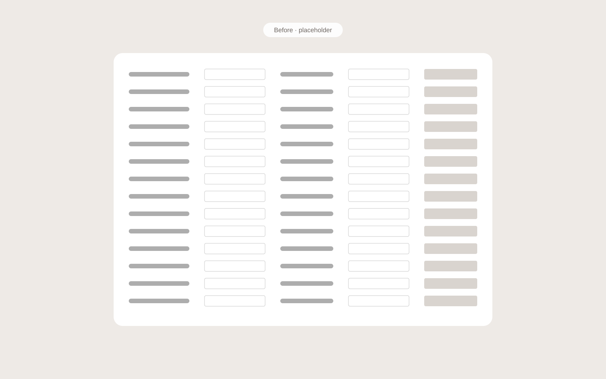
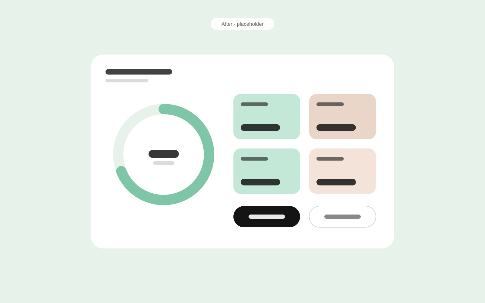

A smart barn needs a simple screen
The system uses cameras and AI detection to keep dairy cows cool. Farmers and technicians run it through a control interface that sits between the AI and the barn.
[One or two sentences on why cooling matters: heat stress, cow welfare, milk yield.]
Built by developers, hard to use in the barn
The original interface was built by the developers. Everyday actions and sensitive technical parameters carried the same weight, and farmers and technicians found it hard to operate.
[A concrete example of what went wrong, if you have one.]
We went to the barn and listened
I initiated field tests, which the product manager ran with farmers. The findings helped us define what farmers and technicians actually need.
- FarmersNeed the few most important actions, fast and clear. [Add what you heard.]
- TechniciansOwn the parameter settings, and need them protected from accidental changes. [Add what you heard.]
- [Surprise][Something unexpected the field tests revealed.]
Lead with action, lock what matters
I worked on the specification and redesign together with the product manager and the developers.
- Most important actions firstThe new interface puts the actions farmers use most at the front, with clear hierarchy.
- Parameters hidden and lockedParameter settings moved out of the way and locked, so only technicians can change them.
- Built on the brandThe design concept follows the company’s brand language.
From one flat screen to clear priorities


Simple for farmers, safe for technicians
A control interface farmers can use at a glance, with risky settings safely in technicians’ hands.
[Add an outcome: feedback from farmers, fewer support calls, faster setup, adoption.]